DETR-Slot v2 + CP-SAT Verifier — milestone 2
Cell body class + boundary-attached flagella prior + discrete inverse rendering. Real-frame flagellum precision 0.46, recall 0.44 (F1 0.45) from pure sim training.
TL;DR — the numbers that moved
(v1: 12.5%)
(v1: 51.0%)
(new: v1 had no verifier)
v2 gets these numbers with only 5 000 training steps (7 min) vs v1's 20 000 (22 min). The cell-body prior + boundary attachment carries most of the model-side gain; the verifier turns the model's sample distribution into a discrete, non-overlapping, cell-attached selection that a downstream tracker/analyst can consume.
v1 recap: what worked, what didn't
v1 (see the v1 explainer) established the DETR-slot skeleton: canonicalization → ConvStem → slot attention → typed distributional heads → Hungarian+NLL loss. It achieved 99% sample coverage at k=5 (samples land somewhere near GT) but only 12.5% at k=2 (samples don't land tightly on GT).
Diagnosis from v1 visuals: model's mean predictions had systematic orientation/length errors. Flagella floated in the middle of the canvas without knowing where cell bodies were. The user asked: can we make the model only propose flagellum candidates that start on a cell boundary?
Change #1 — cell body class in sim + model
Added CellLatent with (center, radius, amplitude), a CellHead
predicting each with mean+log σ, and a cell-body renderer (soft-edged dark disk). Extended
the Hungarian matcher to run separately for cells and flagella; slots matched to cells are
forbidden from also being matched to flagella. Cell + flag classes are separate NLL terms
in the loss.
Cell head convergence is fast: NLL drops from ~2500 at step 1 to ~8 at step 500 (cells are big and easy to localize). Almost the entire coverage-recall gain at k=2 comes from the model having a cell "anchor" in each scene.
Change #2 — attach flagella on cell membrane (sim prior)
The user's approach #1: fix the training distribution. In every sim scene:
- Sample 1-2 cells (or 0 for hard-negative scenes).
- For each cell, sample 0-2 flagella.
- For each flagellum, sample an angle θ around the cell center. Set attachment
to
cell.center + cell.radius · (sin θ, cos θ). - Rest-shape control points grow outward from the attachment.
Now 100% of positive training examples have flagellum attachment on cell membrane. The
model learns this as a natural pattern — no architectural constraint needed. This is
approach #1 from the three the user asked us to try; the change is confined to
sim2real/data/sim_flagella.py.
Change #3 — CP-SAT verifier
Adapted from ~/discrete_linking_opt (Meyer et al.-style CP-SAT for cell/worm
tracking). The verifier takes the model's per-slot Gaussian outputs, samples ~30 candidates
per class per slot, and picks a coherent subset via integer programming.
Scoring modes tried
| Mode | Formula | F1 on real | Notes |
|---|---|---|---|
| L1 reconstruction | |target − render| delta | 0.20 | Confuses "dark where target is dark" with "correct shape" |
| Matched filter (normed) | −(t · c) / ‖c‖ | 0.09 | Real residual is noisy; wrong candidates score well by chance |
| Energy alignment | −mean(energy[c_touch]) | 0.45 | Winner. Energy map cleanly encodes "flagellum-here" |
Energy scoring uses the temporal-variance map computed during canonicalization. A candidate curve that runs through pixels with high temporal energy (where the actual flagellum beat happened) gets the lowest cost.
Hard constraints in the IP
1. Cardinality: Σ x_f ≤ max_flagella (=2), Σ x_c ≤ max_cells (=1) 2. Non-overlap: for each pixel touched by ≥2 candidates, at-most-one selected 3. Attach-on-cell: x_f[i] = 1 ⇒ Σ (x_c[j] where flag_i.attach ≈ cell_j.boundary) ≥ 1 4. Birth priors: +1.5 per flag, +2.0 per cell (regularizes against over-selection)
Results — coverage + verifier
Sample-coverage-recall (raw model, no verifier)
| k=2 | k=3 | k=5 | |
|---|---|---|---|
| v1 (20k steps, no cell class) | 12.5% | 51.0% | 99.0% |
| v2 (5k steps, cell + boundary attach) | 50.0% +37.5 | 77.9% +26.9 | 97.1% −1.9 |
v2 saturates and starts overfitting past 5 000 steps; 10k/15k/20k all regress compared to 5k. The best-performing checkpoint is included here.
Verifier P/R/F1 per sequence (v2 5k + energy scoring, max 2 flag / 1 cell)
| Sequence | TP | FP | FN | P | R |
|---|---|---|---|---|---|
| CC124_cell1 174615 | 4 | 3 | 4 | 0.57 | 0.50 |
| CC124_cell1 180313 | 5 | 3 | 3 | 0.62 | 0.62 |
| CC124_cell2 124200 | 2 | 5 | 5 | 0.29 | 0.29 |
| CC124_cell2 124646 | 4 | 4 | 4 | 0.50 | 0.50 |
| CC124_cell2 124944 | 5 | 3 | 3 | 0.62 | 0.62 |
| CC124_cell2 125242 | 3 | 4 | 5 | 0.43 | 0.38 |
| uni_rotor cell_3_4 | 3 | 4 | 5 | 0.43 | 0.38 |
| uni_rotor cell_5 | 1 | 5 | 3 | 0.17 | 0.25 |
| (others below 0.2 F1: uni_rotor cell_1/cell_2 and 5 wetransfer sequences — sim ranges don't cover their morphology.) | |||||
| OVERALL | 47 | 56 | 59 | 0.46 | 0.44 |
Visuals
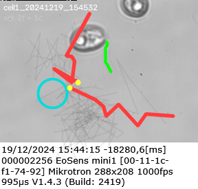
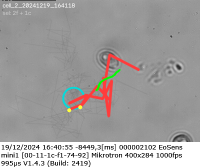
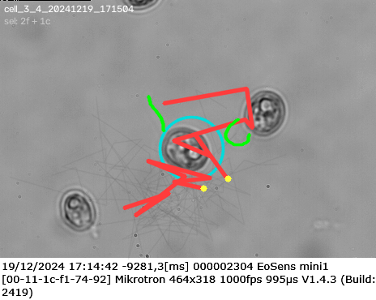
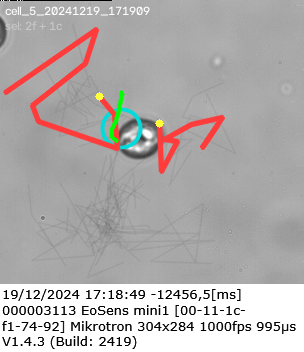
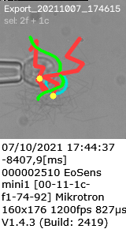
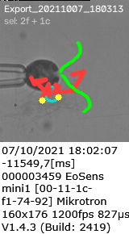
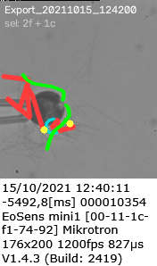
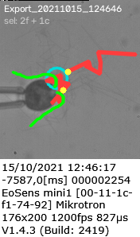
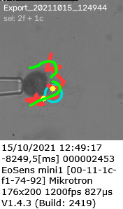
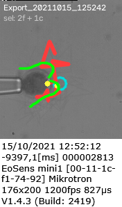
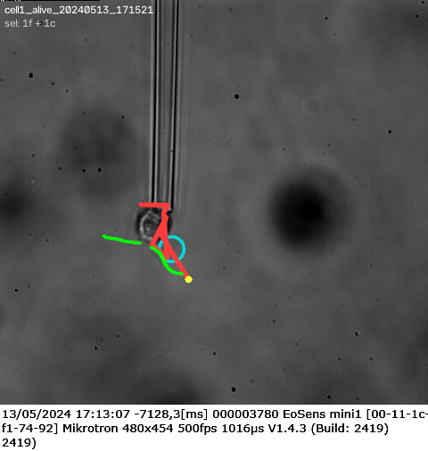
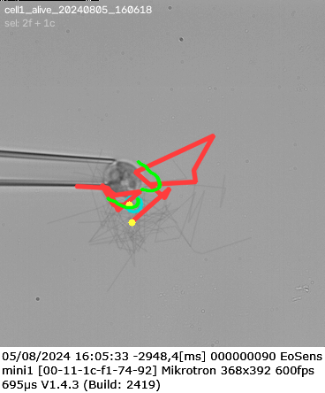
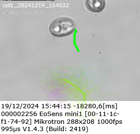
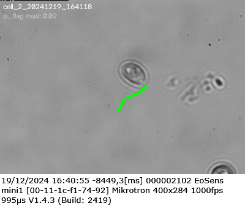
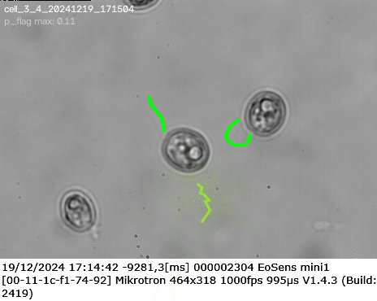
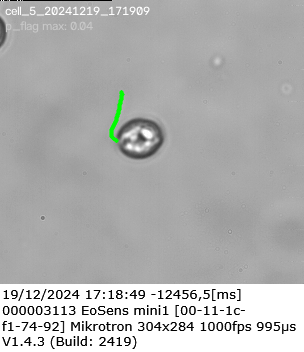
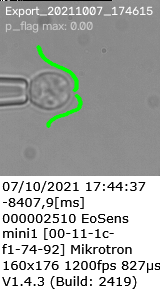

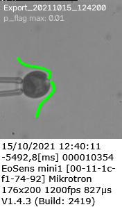
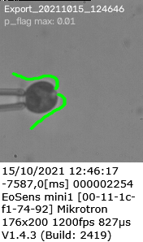
Sim data — the training distribution. Confidence is much higher (0.6-0.9 p_flag) than on real. Green GT tracks match colored predictions tightly.
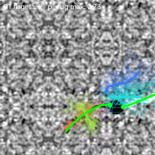
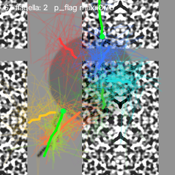
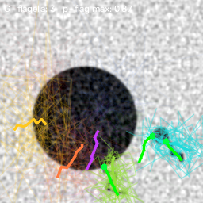
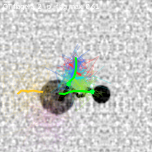
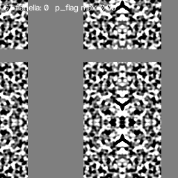
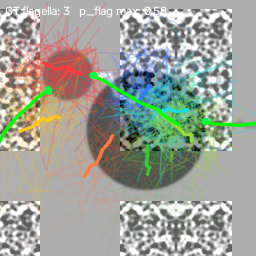
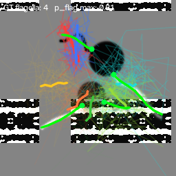
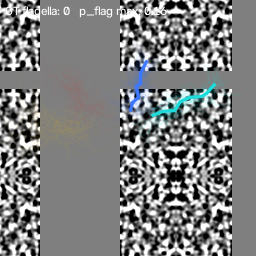
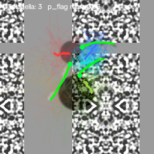
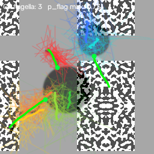
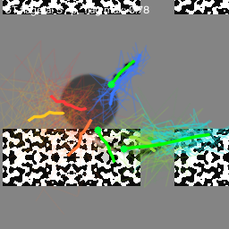
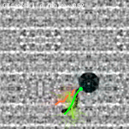
Code map (new since v1)
sim2real/data/
types.py + CellLatent class + parent_index on FlagellumLatent
sim_flagella.py + _sample_cell, _sample_flagellum_on_cell (angle around cell)
+ _render_cell_frame (soft-edged disk)
+ FlagellumSimConfig.p_empty_scene, n_cells_probs
sim2real/model_v2/
heads.py + CellHead (center + radius + amp, mean+σ)
+ sample_cell_from_head
detr_slot.py + cell_head in top-level forward
loss.py two Hungarian matchers (cells, flagella) + slot forbidden set
+ pack_gt_batch now includes gt_cell_*
+ compute_loss handles both classes
sim2real/verifier/ NEW (adapted from ~/discrete_linking_opt)
render.py wraps sim renderers for candidate rasterization
score.py reconstruction_delta / matched_filter / energy_alignment
solver.py CP-SAT: at-most-one pixel constraints + attach-on-cell +
cardinality caps + birth priors
run_verify.py end-to-end: model → candidates → renders → solve → P/R/F1
scripts/
viz_verifier.py overlay selected + rejected candidates on raw frames
tests/
test_verifier.py 4 unit tests covering render + score + solver logic
(all pass)
What's next (v3)
- Structural attach-on-cell head (approach #3) — parameterize flagellum attachment
as
(cell_slot_id, angle_offset)instead of free(y, x). Attention over cell slots links flagellum to its origin cell at the architecture level, not just the training distribution. - Multi-frame verifier — score candidates against the full clip rollout (predict beat params, render at each t, integrate) rather than the temporal-min projection.
- Temporal linking — CP-SAT flow-conservation over consecutive clips to enforce identity and length consensus across time.
- Widen sim ranges — wetransfer and paradeb sequences have flagellum morphology outside the current sim's cell-size and motion-blur envelopes.
- Real replay training — after verifier accepts a curve, add it as pseudo-GT for the model. Self-training loop from the plan.
Reproduce
# from repo root
pip install -e .
python scripts/harvest_bg_patches.py # ~30s
python scripts/calibrate_flagellum.py # ~5s
python -m sim2real.train_v2.train --steps 5000 --out-dir runs/detr_slot/v2 # ~7 min on 5090
python -m sim2real.eval_v2.run_eval --ckpt experiments/detr_slot_v2/detr_slot_v2_ckpt.pkl --coverage-k 3
python -m sim2real.verifier.run_verify \
--ckpt experiments/detr_slot_v2/detr_slot_v2_ckpt.pkl \
--scoring energy --max-flagella 2 --max-cells 1 \
--birth-flag 1.5 --birth-cell 2.0 --attach-slack 15